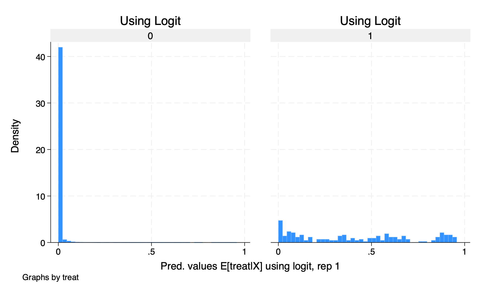
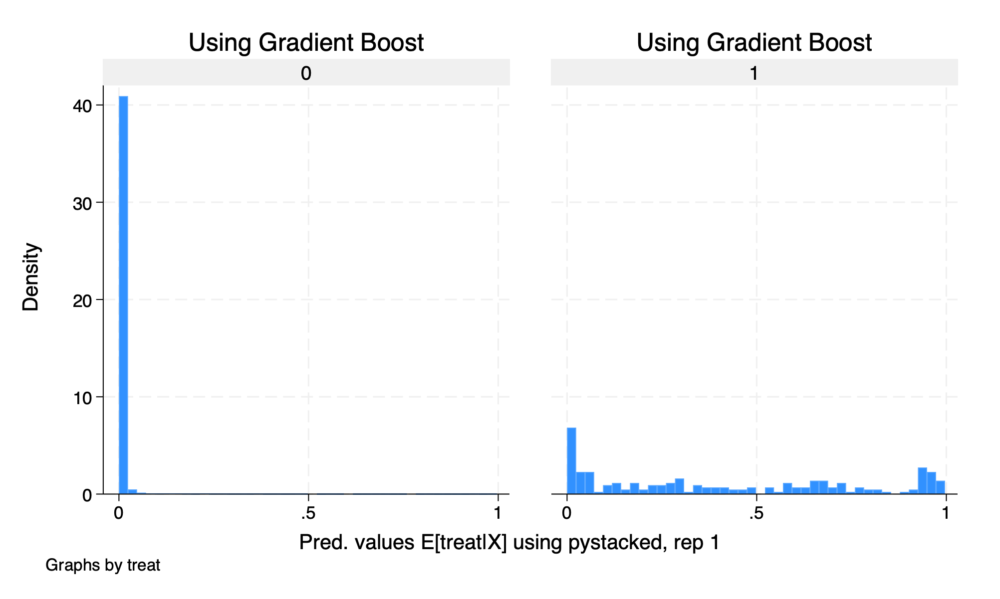
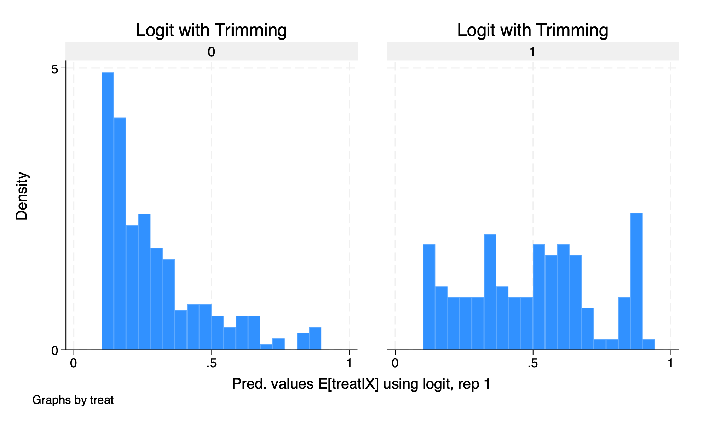
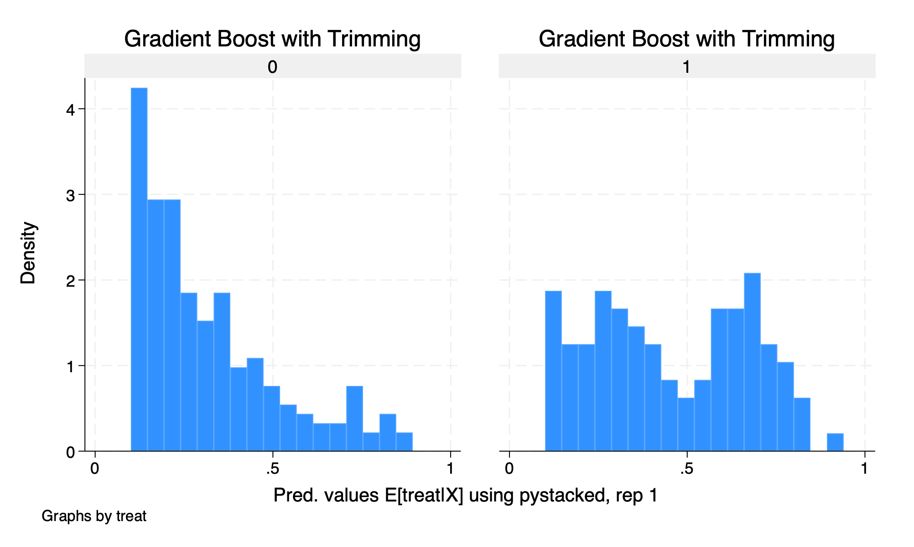

Chapter 4 Training Example Revisited
I want to revisit the training sample to show the importance of our second assumption of common support.
4.1 Doubly Robust Estimator
Let’s reload the data and run our double robust estimator.
quietly {
use https://github.com/scunning1975/mixtape/raw/master/nsw_mixtape.dta, clear
drop if treat==0
* Now merge in the CPS controls from footnote 2 of Table 2 (Dehejia and Wahba 2002)
append using https://github.com/scunning1975/mixtape/raw/master/cps_mixtape.dta
gen agesq=age*age
gen agecube=age*age*age
gen edusq=educ*edu
gen u74 = 0 if re74!=.
replace u74 = 1 if re74==0
gen u75 = 0 if re75!=.
replace u75 = 1 if re75==0
gen interaction1 = educ*re74
gen re74sq=re74^2
gen re75sq=re75^2
gen interaction2 = u74*hisp
* Now estimate the propensity score
logit treat age agesq agecube educ edusq marr nodegree black hisp re74 re75 u74 u75 interaction1
predict pscore
* Checking mean propensity scores for treatment and control groups
sum pscore if treat==1, detail
sum pscore if treat==0, detail
* Now look at the propensity score distribution for treatment and control groups
histogram pscore, by(treat) binrescale
* Trimming the propensity score
drop if pscore <= 0.1
drop if pscore >= 0.9
}
*ATT
*We have to rescale for the concavity of the logit.
gen re78_scaled = re78/1000
teffects ipwra (re78_scaled age agesq agecube educ edusq marr nodegree black hisp re74 re75 u74 u75 interaction1) (treat age agesq agecube educ edusq marr nodegree black hisp u74 u75 interaction1, logit), atet
capture drop overlap
*ATE
teffects ipwra (re78_scaled age agesq agecube educ edusq marr nodegree black hisp re74 re75 u74 u75 interaction1) (treat age agesq agecube educ edusq marr nodegree black hisp u74 u75 interaction1, logit), ateIteration 0: EE criterion = 3.017e-21
Iteration 1: EE criterion = 7.330e-29
Treatment-effects estimation Number of obs = 361
Estimator : IPW regression adjustment
Outcome model : linear
Treatment model: logit
------------------------------------------------------------------------------
| Robust
re78_scaled | Coefficient std. err. z P>|z| [95% conf. interval]
-------------+----------------------------------------------------------------
ATET |
treat |
(1 vs 0) | 2.565509 .8702431 2.95 0.003 .8598639 4.271154
-------------+----------------------------------------------------------------
POmean |
treat |
0 | 3.873287 .4696333 8.25 0.000 2.952823 4.793752
------------------------------------------------------------------------------
Iteration 0: EE criterion = 2.997e-21
Iteration 1: EE criterion = 1.369e-28
Treatment-effects estimation Number of obs = 361
Estimator : IPW regression adjustment
Outcome model : linear
Treatment model: logit
------------------------------------------------------------------------------
| Robust
re78_scaled | Coefficient std. err. z P>|z| [95% conf. interval]
-------------+----------------------------------------------------------------
ATE |
treat |
(1 vs 0) | 1.608922 .6988993 2.30 0.021 .2391044 2.978739
-------------+----------------------------------------------------------------
POmean |
treat |
0 | 4.297229 .3749753 11.46 0.000 3.562291 5.032167
------------------------------------------------------------------------------Our estimate \(\widehat{ATE}\) is \(\$1,609\), and the estimate \(\widehat{ATET}\) is estimated \(\$2,566\). Recall that we need to trim our \(p\)-scores to satisfy the common support/overlap assumption.
4.2 DDML Estimator
Let’s rerun this, but we will use lasso and gradient boost for our training models along side OLS and logit.
quietly {
macro drop _all
use https://github.com/scunning1975/mixtape/raw/master/nsw_mixtape.dta, clear
drop if treat==0
* Now merge in the CPS controls from footnote 2 of Table 2 (Dehejia and Wahba 2002)
append using https://github.com/scunning1975/mixtape/raw/master/cps_mixtape.dta
gen agesq=age*age
gen agecube=age*age*age
gen edusq=educ*edu
gen u74 = 0 if re74!=.
replace u74 = 1 if re74==0
gen u75 = 0 if re75!=.
replace u75 = 1 if re75==0
gen interaction1 = educ*re74
gen re74sq=re74^2
gen re75sq=re75^2
gen interaction2 = u74*hisp
gen re78_scaled = re78/1000
global Y re78_scaled
global D treat
global X age agesq agecube educ edusq marr nodegree black hisp re74 re75 u74 u75 interaction1
set seed 123456
display "$X"
}
ddml init interactive, kfolds(5)
ddml E[Y|X,D]: reg $Y $X
ddml E[Y|X,D]: pystacked $Y $X, type(reg) method(lassocv)
ddml E[D|X]: logit $D $X
ddml E[D|X]: pystacked $D $X, type(class) method(gradboost)
ddml crossfit
bysort treat: summarize D1_logit, detail
bysort treat: summarize D2_pystacked, detailLearner Y1_reg added successfully.
Learner Y2_pystacked added successfully.
Learner D1_logit added successfully.
Learner D2_pystacked added successfully.
Cross-fitting E[y|X,D] equation: re78_scaled
Cross-fitting fold 1 2 3 4 5 ...completed cross-fitting
Cross-fitting E[D|X] equation: treat
Cross-fitting fold 1 2 3 4 5 ...completed cross-fitting
----------------------------------------------------------------------------------
-> treat = 0
Pred. values E[treat|X] using logit, rep 1
-------------------------------------------------------------
Percentiles Smallest
1% 4.10e-07 8.30e-11
5% 1.43e-06 2.42e-10
10% 2.92e-06 8.97e-10 Obs 15,992
25% .0000162 2.07e-09 Sum of wgt. 15,992
50% .0001114 Mean .0067867
Largest Std. dev. .0432812
75% .0009588 .8752542
90% .0065014 .9023648 Variance .0018733
95% .0163545 .919232 Skewness 12.33715
99% .1673345 .9519283 Kurtosis 189.019
----------------------------------------------------------------------------------
-> treat = 1
Pred. values E[treat|X] using logit, rep 1
-------------------------------------------------------------
Percentiles Smallest
1% .0007289 .0005851
5% .0054053 .0007289
10% .018033 .0009342 Obs 185
25% .0934181 .0015951 Sum of wgt. 185
50% .3965528 Mean .4155009
Largest Std. dev. .3162217
75% .6564633 .9384993
90% .8898593 .9412911 Variance .0999962
95% .9193571 .9505891 Skewness .2252374
99% .9505891 .9577641 Kurtosis 1.698453
----------------------------------------------------------------------------------
-> treat = 0
Pred. values E[treat|X] using pystacked, rep 1
-------------------------------------------------------------
Percentiles Smallest
1% .0000436 .0000222
5% .0000746 .0000225
10% .0001128 .0000237 Obs 15,992
25% .000179 .0000258 Sum of wgt. 15,992
50% .0003444 Mean .0065602
Largest Std. dev. .0489033
75% .0010962 .9835668
90% .0040418 .9846331 Variance .0023915
95% .0113463 .9934209 Skewness 13.19906
99% .1583603 .9963998 Kurtosis 205.557
----------------------------------------------------------------------------------
-> treat = 1
Pred. values E[treat|X] using pystacked, rep 1
-------------------------------------------------------------
Percentiles Smallest
1% .000392 .0002826
5% .0036306 .000392
10% .0083862 .0006855 Obs 185
25% .0616826 .0011451 Sum of wgt. 185
50% .3462951 Mean .4155527
Largest Std. dev. .3432286
75% .6983553 .982987
90% .943571 .983358 Variance .1178059
95% .9622306 .9874787 Skewness .3037242
99% .9874787 .9874787 Kurtosis 1.653423We can see that our \(\hat{p}\)-scores are quiet different between treatment and comparison groups. We saw this last week with our matching methods for this training example.
Let’s graph our histograms by \(\hat{p}\)-scores
histogram D1_logit_1, by(treat) title("Using Logit")
graph export "/Users/Sam/Desktop/Econ 672/Bookdown/Week5/Train_logit_histogram.png", replace
histogram D2_pystacked_1, by(treat) title ("Using Gradient Boost")
graph export "/Users/Sam/Desktop/Econ 672/Bookdown/Week5/Train_gradboost_histogram.png", replace
We see that our common support assumption is violated. Let’s run our estimate using DDML without trimming.
Model: interactive, crossfit folds k=5, resamples r=1
Mata global (mname): m0
Dependent variable (Y): re78_scaled
re78_scaled learners: Y1_reg Y2_pystacked
D equations (1): treat
treat learners: D1_logit D2_pystacked
DDML estimation results (ATE):
spec r Y(0) learner Y(1) learner D learner b SE
1 1 Y1_reg Y1_reg D1_logit -4.291 (0.283)
2 1 Y1_reg Y1_reg D2_pystacked -4.654 (0.255)
* 3 1 Y1_reg Y2_pystacked D1_logit -6.440 (0.262)
4 1 Y1_reg Y2_pystacked D2_pystacked -6.758 (0.232)
5 1 Y2_pystacked Y1_reg D1_logit -4.290 (0.283)
6 1 Y2_pystacked Y1_reg D2_pystacked -4.646 (0.254)
7 1 Y2_pystacked Y2_pystacked D1_logit -6.439 (0.262)
8 1 Y2_pystacked Y2_pystacked D2_pystacked -6.750 (0.231)
* = minimum MSE specification for that resample.
Min MSE DDML model, specification 3 (ATE)
E[y|X,D=0] = Y1_reg0_1 Number of obs = 16177
E[y|X,D=1] = Y2_pystacked1
E[D|X] = D1_logit_1
------------------------------------------------------------------------------
| Robust
re78_scaled | Coefficient std. err. z P>|z| [95% conf. interval]
-------------+----------------------------------------------------------------
treat | -6.440495 .261945 -24.59 0.000 -6.953898 -5.927092
------------------------------------------------------------------------------
Warning: 14838 propensity scores trimmed to lower limit .01.Our estimated \(\widehat{ATE}\) is \(-\$6,440\), which is a far cry from our RCT estimate.
4.3 Trimming
Let’s do some trimming. Our model shows that the logit has a lower MSE than the gradiant boost, so we will use that first and then show our estimate with the
histogram D1_logit_1 if D1_logit_1 >.1 & D1_logit_1 <.9, by(treat) title(Logit with Trimming)
graph export "/Users/Sam/Desktop/Econ 672/Bookdown/Week5/Train_logit_histogram_trimmed.png", replace
histogram D2_pystacked_1 if D2_pystacked_1 >.1 & D2_pystacked_1 <.9, by(treat) title(Gradient Boost with Trimming)
graph export "/Users/Sam/Desktop/Econ 672/Bookdown/Week5/Train_gradboost_histogram_trimmed.png", replace
Let’s rerun our estimate but with trimmed data.
Model: interactive, crossfit folds k=5, resamples r=1
Mata global (mname): m0
Dependent variable (Y): re78_scaled
re78_scaled learners: Y1_reg Y2_pystacked
D equations (1): treat
treat learners: D1_logit D2_pystacked
DDML estimation results (ATE):
spec r Y(0) learner Y(1) learner D learner b SE
1 1 Y1_reg Y1_reg D1_logit 1.338 (0.965)
2 1 Y1_reg Y1_reg D2_pystacked -1.854 (3.334)
* 3 1 Y1_reg Y2_pystacked D1_logit 1.423 (0.860)
4 1 Y1_reg Y2_pystacked D2_pystacked -1.312 (2.536)
5 1 Y2_pystacked Y1_reg D1_logit 1.359 (0.963)
6 1 Y2_pystacked Y1_reg D2_pystacked -1.776 (3.338)
7 1 Y2_pystacked Y2_pystacked D1_logit 1.444 (0.858)
8 1 Y2_pystacked Y2_pystacked D2_pystacked -1.234 (2.542)
* = minimum MSE specification for that resample.
Min MSE DDML model, specification 3 (ATE)
E[y|X,D=0] = Y1_reg0_1 Number of obs = 346
E[y|X,D=1] = Y2_pystacked1
E[D|X] = D1_logit_1
------------------------------------------------------------------------------
| Robust
re78_scaled | Coefficient std. err. z P>|z| [95% conf. interval]
-------------+----------------------------------------------------------------
treat | 1.423175 .8597525 1.66 0.098 -.2619087 3.108259
------------------------------------------------------------------------------Our estimated \(\hat{ATE}\) is \(\$1,423\), which is below our DR estimate and the RCT estimate and it is not statistically significant at the \(5\%\) level.